Journal articles
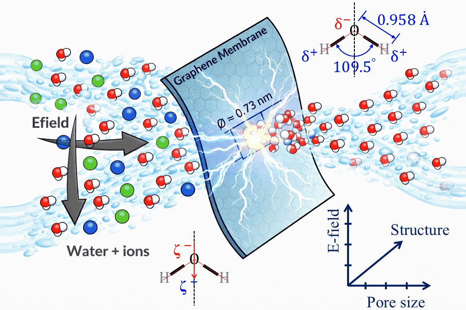
Electric-Field Effects on Selective Transport through Graphene Nanopores. ACS Applied Materials & Interfaces · 10.1021/acsami.6c11813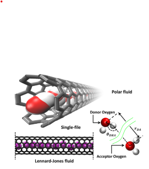
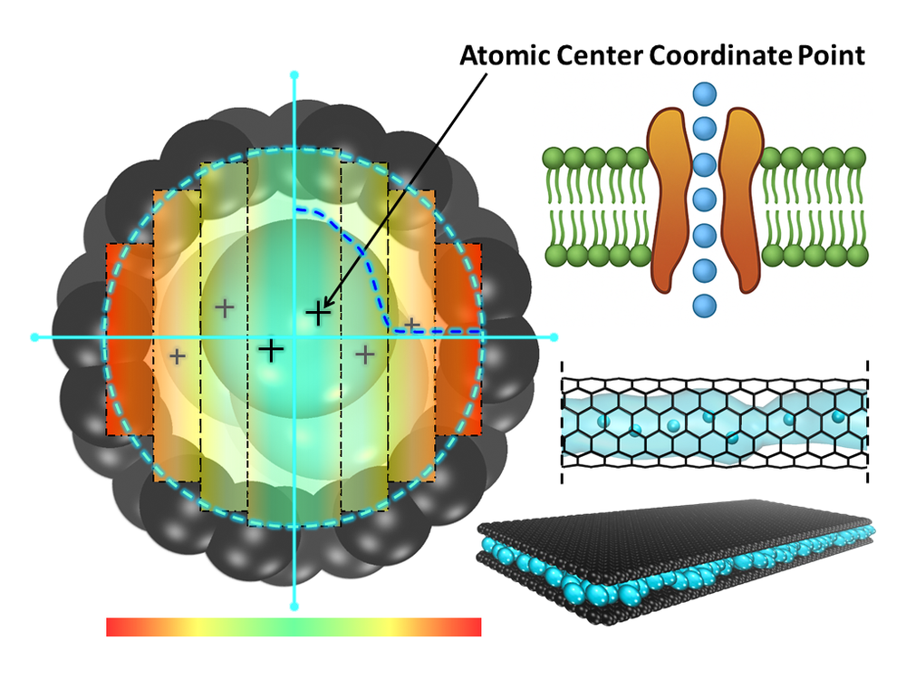
Redefining flow regimes in sub-nanometer carbon channels under life-scale confinement. Physics of Fluids, 37(9), 092014 · 10.1063/5.0284134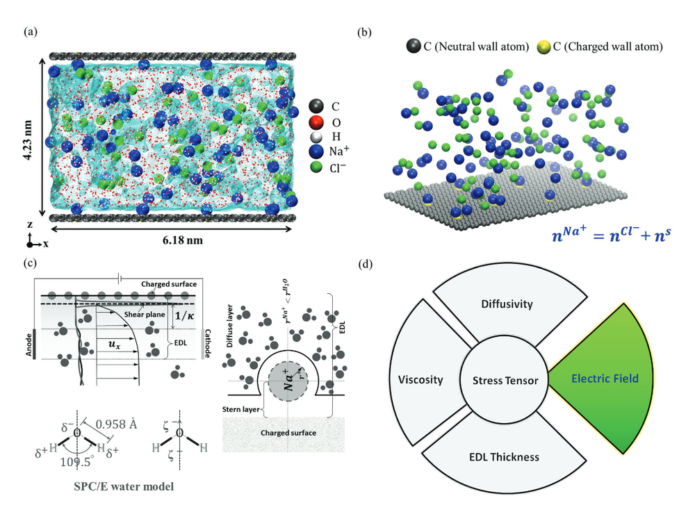
Applied Electric Field Effects on Diffusivity and Electrical Double-Layer Thickness. Small, 20(46), 2404397 · 10.1002/smll.202404397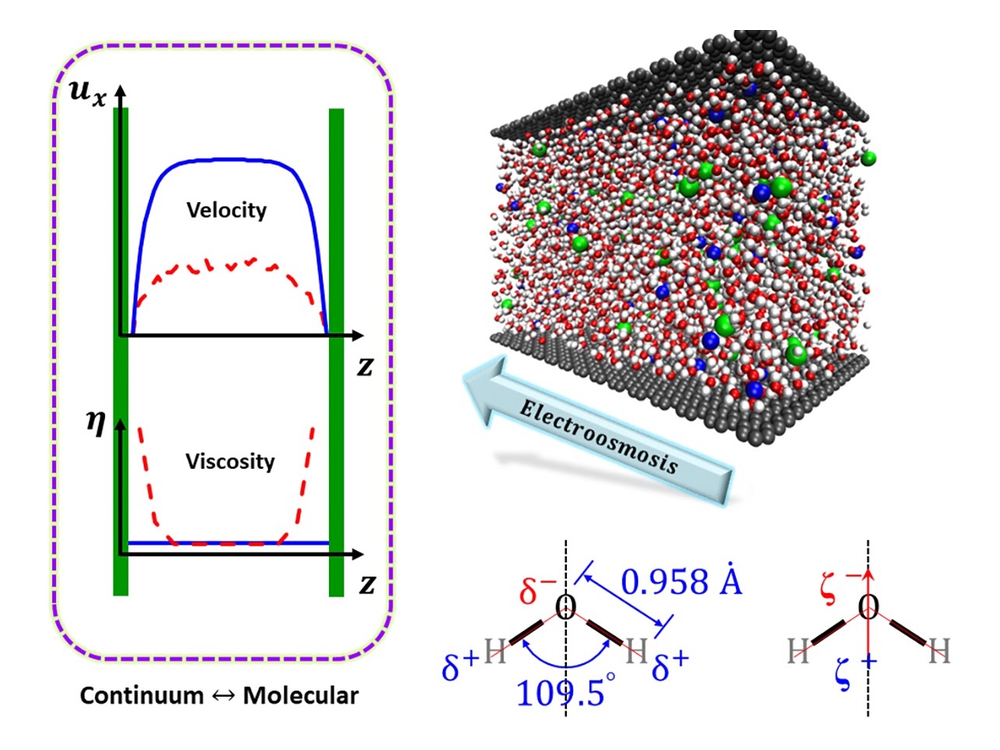
Revealing molecular insights into surface charge and local viscosity in electroosmotic flows. Physics of Fluids, 36(6), 062003 · 10.1063/5.0205421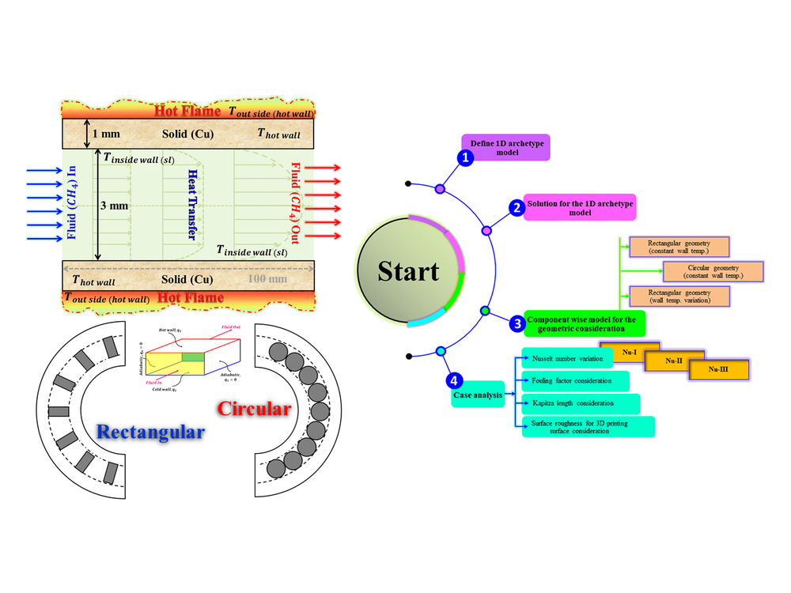
Continuum Model Template to Analyze Complex Parameters for Engine Cooling. Journal of Mechanical Science and Technology · 10.1007/s12206-023-1239-2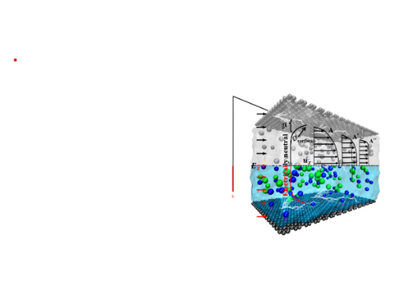
Unraveling the Molecular Interface and Boundary Problems in an Electrical Double Layer and Electroosmotic Flow. Langmuir, 38(23), 7244–7255 · 10.1021/acs.langmuir.2c00734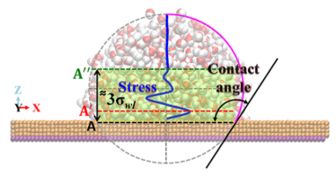
Effects of dissimilar molecular interface and ion concentration on wetting characteristics of nanodroplets. Microfluidics and Nanofluidics, 25, 60 · 10.1007/s10404-021-02455-6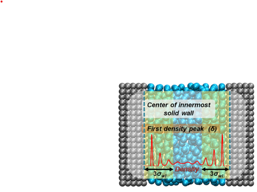
Scale Effects in Nanoscale Heat Transfer for Fourier's Law in a Dissimilar Molecular Interface. ACS Omega, 5(41), 26527–26536 · 10.1021/acsomega.0c03241
Patents
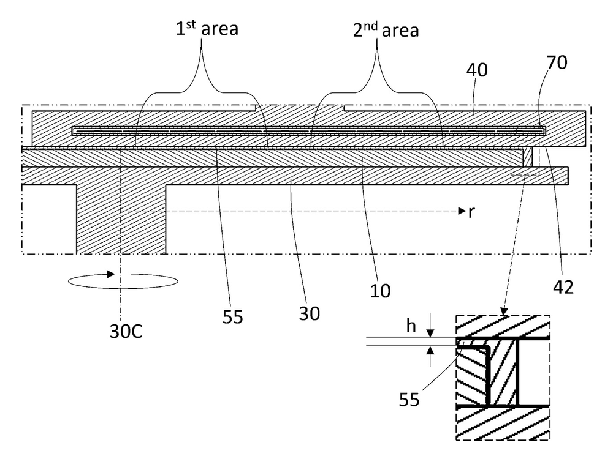
Method and apparatus for nanofluid wet cleansing wafer (2026). US Patent App. 18/981,940.
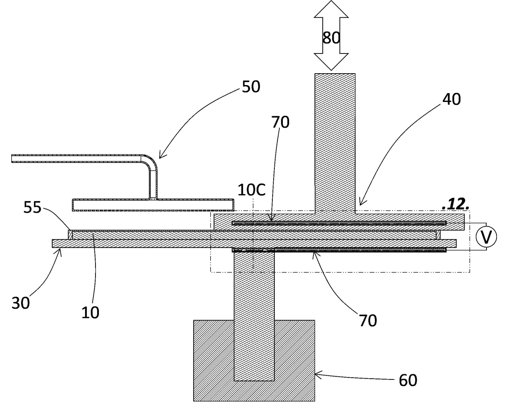
Nanofluid wet cleansing method for wafer and cleansing device applying the same (2024). 10.8080/1020240118705
Conference papers
- Sub-1nm Semiconductor Modeling: Interfacial Insights — KSME 2024, Gyeongju, Republic of Korea.
- Nanoscale Interfacial Heat Transfer in Semiconductor Modeling — KSME 2024, Jeju Island, Republic of Korea.
- Why is Dissimilar Molecular Boundary Important? — KSME 2023, Incheon-Songdo, Republic of Korea.
- Revealing the Physical Gap between Continuum to Sub-continuum Transport — KSME 2023, Busan, Republic of Korea.
- Nanoscale Transport Phenomena: Why Atomic-interface is Important? — KSME 2023, University of Ulsan, Republic of Korea.
- An Approach to Build a Mars Rover: Mongol Ovizatrik '71 — ICCIT 2022, Cox's Bazar, Bangladesh.
- Continuum Model Based Thermal Prediction Template for the Spacecraft Application — KSPE Winter Conference 2022, Busan, Republic of Korea.
- Origins of Dissimilar Molecular Interface and Scale Effects on Heat Transfer Phenomena of Nanochannel — KSME 2021, UNIST, Ulsan, Republic of Korea.
- Utilization of E-waste in Concrete and its Environmental Impact — A Review — ICSCET 2018, Mumbai, India.
- Production of Activated Carbon from Charcoal using Chemical Activation — ICMERE 2017, Chittagong, Bangladesh.
- Corrosion of Different Materials in Different Solutions — ICMERE 2017, Chittagong, Bangladesh.
Invited & oral presentations
- Effect of the Molecular Interface: Heat transfer, Nanodroplet, and EOF — International Joint Seminar on Mechanical Engineering 2022, Japan-Asia Youth Exchange Program in Science, Japan.
- The Effect of Boundary in Nanoscale Phenomena on the Atomic-level Interface — 32nd International Symposium on Rarefied Gas Dynamics, 2022, South Korea.
- Origin of Interface Phenomena in Nanoscale Heat Transfer — Pre-RGD32 Online Workshop on Recent Hot Topics in Rarefied Gas Dynamics, 2021, South Korea.